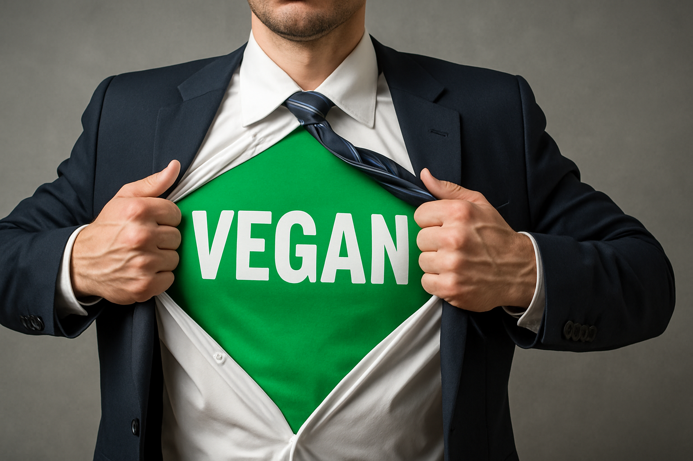

Vegan Protein Powder for Athletes
Athletes burn protein like race fuel, so the daily target climbs to 1.6–2.2 g per kg body weight with single servings that carry around 3 g leucine for a full-throttle mTOR signal. *
A 2024 meta-analysis of thirty-one randomized trials showed plant protein pushed strength and endurance higher than low-protein control and nearly matched animal sources once total grams were equal. *
If you still worry about slower plant digestion, science says just add leucine. A crossover tracer study found that spiking plant protein with extra leucine drove muscle protein synthesis to parity with whey within three hours. *
Gut uptake matters for game day, too. Taiwanese researchers gave resistance-trained adults pea protein plus the probiotic strain TWK10 for six weeks and logged bigger jumps in plasma amino acids and bench-press volume than protein alone. *
Of course, medals disappear if your shake pops a drug test, so reach for tubs stamped NSF Certified for Sport or Informed-Choice. Third-party labs screen for banned stimulants, anabolic agents, and the heavy-metal hitchhikers that still plague 40 percent of plant powders. *
Now the fun part—picking a powder that checks every locker-room box.
- Vega Sport Premium Protein: Thirty grams protein + 5 g BCAAs per scoop, NSF-Certified for Sport, plus tart-cherry for recovery.
- Orgain Organic Plant-Based Protein Powder: 21 g pea-rice protein, smooth vanilla, public heavy-metal tests, budget-friendly.
- Naked Pea Protein: 27 g single-ingredient isolate, lab-verified for contaminants, plus add-on leucine for parity with whey.
- Sunwarrior Warrior Blend: 18 g hemp-pea-goji, 100 cal, zero soy/gluten, ultra-light mouthfeel for sprints.
Dose strategy matters: split 0.3 g/kg into 4–5 evenly spaced meals, add a bedtime shake for double-session days, and let consistent dosing carry the load. *